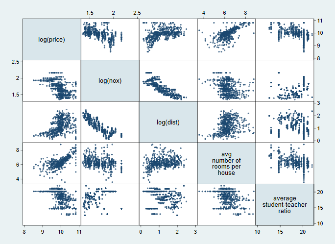
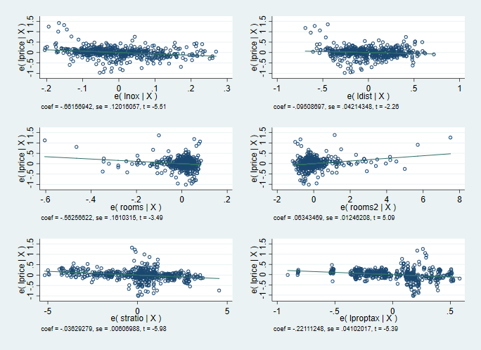
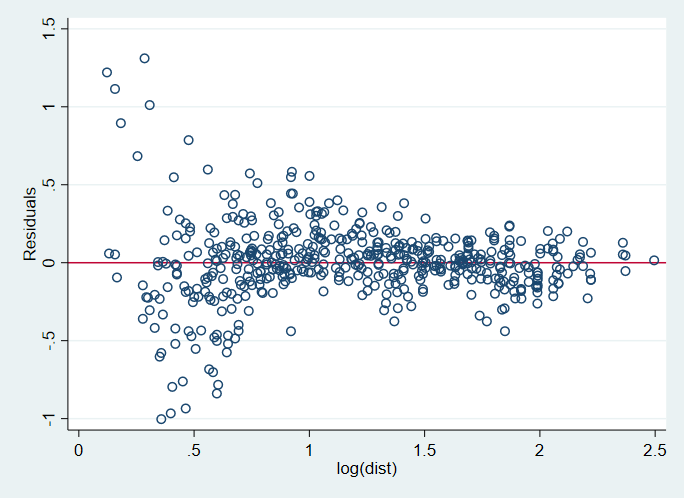

5 Specifying the Functional Form
5.1 Introduction
5.2 Specification Error
5.2.1 Omitting relevant Variables from the Model
5.2.2 Graphically Analyzing Regression data
. use hprice2a.(Housing price data for Boston-area communities)
. graph matrix lprice lnox ldist rooms stratio, ms(Oh) msize(tiny)

graph matrix of regression variables
5.2.3 Added-Variable Plots
. use hprice2a.(Housing price data for Boston-area communities)
. generate rooms2 = rooms^2
. regress lprice lnox ldist rooms rooms2 stratio lproptax
Source | SS df MS Number of obs = 506
-------------+---------------------------------- F(6, 499) = 138.41
Model | 52.8357813 6 8.80596356 Prob > F = 0.0000
Residual | 31.7464896 499 .06362022 R-squared = 0.6247
-------------+---------------------------------- Adj R-squared = 0.6202
Total | 84.5822709 505 .167489645 Root MSE = .25223
------------------------------------------------------------------------------
lprice | Coef. Std. Err. t P>|t| [95% Conf. Interval]
-------------+----------------------------------------------------------------
lnox | -.6615694 .1201606 -5.51 0.000 -.8976524 -.4254864
ldist | -.095087 .0421435 -2.26 0.024 -.1778875 -.0122864
rooms | -.5625662 .1610315 -3.49 0.001 -.8789496 -.2461829
rooms2 | .0634347 .0124621 5.09 0.000 .0389501 .0879193
stratio | -.0362928 .0060699 -5.98 0.000 -.0482185 -.0243671
lproptax | -.2211125 .0410202 -5.39 0.000 -.301706 -.1405189
_cons | 14.15454 .5693846 24.86 0.000 13.03585 15.27323
------------------------------------------------------------------------------
. avplots, ms(Oh) msize(small) col(2)

Added-variable plots
5.2.4 Including Irrelevant Variables in the Model
5.2.5 The Asymmetry of Specification Error
5.2.6 Misspecification of the Functional Form
5.2.7 Ramsey’s RESET
. use hprice2a.(Housing price data for Boston-area communities)
. quietly regress lprice lnox ldist rooms stratio
. estat ovtest
Ramsey RESET test using powers of the fitted values of lprice
Ho: model has no omitted variables
F(3, 498) = 9.69
Prob > F = 0.0000
. estat ovtest, rhs
Ramsey RESET test using powers of the independent variables
Ho: model has no omitted variables
F(12, 489) = 11.79
Prob > F = 0.0000
. use hprice2a.(Housing price data for Boston-area communities)
. generate rooms2 = rooms^2
. regress lprice lnox ldist rooms rooms2 stratio lproptax
Source | SS df MS Number of obs = 506
-------------+---------------------------------- F(6, 499) = 138.41
Model | 52.8357813 6 8.80596356 Prob > F = 0.0000
Residual | 31.7464896 499 .06362022 R-squared = 0.6247
-------------+---------------------------------- Adj R-squared = 0.6202
Total | 84.5822709 505 .167489645 Root MSE = .25223
------------------------------------------------------------------------------
lprice | Coef. Std. Err. t P>|t| [95% Conf. Interval]
-------------+----------------------------------------------------------------
lnox | -.6615694 .1201606 -5.51 0.000 -.8976524 -.4254864
ldist | -.095087 .0421435 -2.26 0.024 -.1778875 -.0122864
rooms | -.5625662 .1610315 -3.49 0.001 -.8789496 -.2461829
rooms2 | .0634347 .0124621 5.09 0.000 .0389501 .0879193
stratio | -.0362928 .0060699 -5.98 0.000 -.0482185 -.0243671
lproptax | -.2211125 .0410202 -5.39 0.000 -.301706 -.1405189
_cons | 14.15454 .5693846 24.86 0.000 13.03585 15.27323
------------------------------------------------------------------------------
. estat ovtest
Ramsey RESET test using powers of the fitted values of lprice
Ho: model has no omitted variables
F(3, 496) = 1.64
Prob > F = 0.17985.2.8 Specification Plots
. use hprice2a.(Housing price data for Boston-area communities)
. generate rooms2 = rooms^2
. quietly regress lprice lnox ldist rooms rooms2 stratio lproptax
. rvpplot ldist, ms(Oh) yline(0)

Residual-versus-predictor plot
5.2.9 Specification & Interaction Terms
. use hprice2a.(Housing price data for Boston-area communities)
. generate taxschl = lproptax * stratio
. regress lprice lnox ldist lproptax stratio taxschl
Source | SS df MS Number of obs = 506
-------------+---------------------------------- F(5, 500) = 84.47
Model | 38.7301562 5 7.74603123 Prob > F = 0.0000
Residual | 45.8521148 500 .09170423 R-squared = 0.4579
-------------+---------------------------------- Adj R-squared = 0.4525
Total | 84.5822709 505 .167489645 Root MSE = .30283
------------------------------------------------------------------------------
lprice | Coef. Std. Err. t P>|t| [95% Conf. Interval]
-------------+----------------------------------------------------------------
lnox | -.9041103 .1441253 -6.27 0.000 -1.187276 -.6209444
ldist | -.1430541 .0501831 -2.85 0.005 -.2416499 -.0444583
lproptax | -1.48103 .5163117 -2.87 0.004 -2.495438 -.4666219
stratio | -.4388722 .1538321 -2.85 0.005 -.7411093 -.1366351
taxschl | .0641648 .026406 2.43 0.015 .0122843 .1160452
_cons | 21.47905 2.952307 7.28 0.000 15.6786 27.27951
------------------------------------------------------------------------------5.2.10 Outlier Statistics & Measures of Leverage
. use hprice2a.(Housing price data for Boston-area communities)
. generate rooms2 = rooms^2
. quietly regress lprice lnox ldist rooms rooms2 stratio lproptax
. generate town = _n
. predict double lev if e(sample), leverage
. predict double eps if e(sample), res
. generate eps2 = eps^2
. summarize price lprice
Variable | Obs Mean Std. Dev. Min Max
-------------+---------------------------------------------------------
price | 506 22511.51 9208.856 5000 50001
lprice | 506 9.941057 .409255 8.517193 10.8198
. gsort -lev
. list town price lprice lev eps2 in 1/5
+------------------------------------------------+
| town price lprice lev eps2 |
|------------------------------------------------|
1. | 366 27499 10.2219 .17039262 .6181372 |
2. | 368 23100 10.04759 .11272637 .3002205 |
3. | 365 21900 9.994242 .10947853 .3308896 |
4. | 258 50001 10.8198 .08036068 .0604706 |
5. | 226 50001 10.8198 .0799096 .0338277 |
+------------------------------------------------+
. gsort -eps2
. list town price lprice lev eps2 in 1/5
+------------------------------------------------+
| town price lprice lev eps2 |
|------------------------------------------------|
1. | 369 50001 10.8198 .02250047 1.71812 |
2. | 373 50001 10.8198 .01609848 1.489409 |
3. | 372 50001 10.8198 .02056901 1.242105 |
4. | 370 50001 10.8198 .0172083 1.022456 |
5. | 406 5000 8.517193 .00854955 1.006366 |
+------------------------------------------------+
. predict double dfits if e(sample), dfits
. gsort -dfits
. quietly generate cutoff = abs(dfits) > 2 * sqrt((e(df_m) +1 )/e(N)) & e(sampl
> e)
. list town price lprice dfits if cutoff
+--------------------------------------+
| town price lprice dfits |
|--------------------------------------|
1. | 366 27499 10.2219 1.5679033 |
2. | 368 23100 10.04759 .82559867 |
3. | 369 50001 10.8198 .8196735 |
4. | 372 50001 10.8198 .65967704 |
5. | 373 50001 10.8198 .63873964 |
|--------------------------------------|
6. | 371 50001 10.8198 .55639311 |
7. | 370 50001 10.8198 .54354054 |
8. | 361 24999 10.12659 .32184327 |
9. | 359 22700 10.03012 .31516743 |
10. | 408 27901 10.23642 .31281326 |
|--------------------------------------|
11. | 367 21900 9.994242 .31060611 |
12. | 360 22600 10.02571 .28892457 |
13. | 363 20800 9.942708 .27393758 |
14. | 358 21700 9.985067 .24312885 |
490. | 386 7200 8.881836 -.23838749 |
|--------------------------------------|
491. | 388 7400 8.909235 -.25909393 |
492. | 491 8100 8.999619 -.26584795 |
493. | 400 6300 8.748305 -.28782824 |
494. | 416 7200 8.881836 -.29288953 |
495. | 402 7200 8.881836 -.29595696 |
|--------------------------------------|
496. | 381 10400 9.249561 -.29668364 |
497. | 258 50001 10.8198 -.30053391 |
498. | 385 8800 9.082507 -.302916 |
499. | 420 8400 9.035987 -.30843965 |
500. | 490 7000 8.853665 -.3142718 |
|--------------------------------------|
501. | 401 5600 8.630522 -.33273658 |
502. | 417 7500 8.922658 -.34950136 |
503. | 399 5000 8.517193 -.36618139 |
504. | 406 5000 8.517193 -.37661853 |
505. | 415 7012 8.855378 -.43879798 |
|--------------------------------------|
506. | 365 21900 9.994242 -.85150064 |
+--------------------------------------+
.
. dfbeta lnox
_dfbeta_1: dfbeta(lnox)
. quietly generate dfcut = abs(_dfbeta_1) > 2 * sqrt(e(N)) & e(sample)
. sort _dfbeta_1
. summarize lnox
Variable | Obs Mean Std. Dev. Min Max
-------------+---------------------------------------------------------
lnox | 506 1.693091 .2014102 1.348073 2.164472
. list town price lprice lnox _dfbeta_1
+------------------------------------------------+
| town price lprice lnox _dfbeta_1 |
|------------------------------------------------|
1. | 369 50001 10.8198 1.842136 -.4316933 |
2. | 372 50001 10.8198 1.842136 -.4257791 |
3. | 373 50001 10.8198 1.899118 -.3631822 |
4. | 371 50001 10.8198 1.842136 -.2938702 |
5. | 370 50001 10.8198 1.842136 -.2841335 |
|------------------------------------------------|
6. | 365 21900 9.994242 1.971299 -.2107066 |
7. | 408 27901 10.23642 1.885553 -.1728729 |
8. | 368 23100 10.04759 1.842136 -.1309522 |
9. | 11 15000 9.615806 1.656321 -.1172723 |
10. | 410 27499 10.2219 1.786747 -.1117743 |
|------------------------------------------------|
11. | 413 17900 9.792556 1.786747 -.0959273 |
12. | 437 9600 9.169518 2.00148 -.0955826 |
13. | 146 13800 9.532424 2.164472 -.0914387 |
14. | 438 8700 9.071078 2.00148 -.0856147 |
15. | 420 8400 9.035987 1.971299 -.085223 |
|------------------------------------------------|
16. | 145 11800 9.375854 2.164472 -.0816827 |
17. | 439 8400 9.035987 2.00148 -.070508 |
18. | 182 36199 10.49679 1.585145 -.0668001 |
19. | 423 20800 9.942708 1.814825 -.064928 |
20. | 157 13100 9.480368 2.164472 -.0622912 |
|------------------------------------------------|
21. | 258 50001 10.8198 1.867176 -.0570776 |
22. | 158 41299 10.62859 1.800058 -.0563827 |
23. | 409 17200 9.752665 1.786747 -.0549674 |
24. | 343 16500 9.711116 1.644805 -.0542086 |
25. | 414 16300 9.69892 1.786747 -.0522002 |
|------------------------------------------------|
26. | 143 13400 9.50301 2.164472 -.0499795 |
27. | 446 11800 9.375854 2.00148 -.0498875 |
28. | 31 12700 9.449357 1.682688 -.0480591 |
29. | 156 15600 9.655026 2.164472 -.0474292 |
30. | 493 20100 9.908475 1.806648 -.0472557 |
|------------------------------------------------|
31. | 480 21400 9.971147 1.814825 -.0469688 |
32. | 481 23001 10.04329 1.671473 -.0465269 |
33. | 451 13400 9.50301 1.964311 -.0461007 |
34. | 9 16500 9.711116 1.656321 -.0449441 |
35. | 33 13200 9.487972 1.682688 -.0427313 |
|------------------------------------------------|
36. | 28 14800 9.602383 1.682688 -.0383155 |
37. | 32 14500 9.581903 1.682688 -.0374429 |
38. | 188 32000 10.37349 1.474763 -.0370926 |
39. | 435 11700 9.367344 1.964311 -.0370922 |
40. | 454 17794 9.786616 1.964311 -.0369095 |
|------------------------------------------------|
41. | 436 13400 9.50301 2.00148 -.0368249 |
42. | 35 13500 9.510445 1.682688 -.036522 |
43. | 161 27000 10.20359 1.800058 -.035759 |
44. | 441 10500 9.25913 2.00148 -.0354014 |
45. | 26 13900 9.539644 1.682688 -.0336016 |
|------------------------------------------------|
46. | 445 10800 9.287301 2.00148 -.0330708 |
47. | 10 18900 9.846917 1.656321 -.0328998 |
48. | 101 27499 10.2219 1.648659 -.0317264 |
49. | 189 29801 10.3023 1.474763 -.0315825 |
50. | 12 18900 9.846917 1.656321 -.0311876 |
|------------------------------------------------|
51. | 472 19600 9.883285 1.671473 -.0303079 |
52. | 200 34899 10.46021 1.393766 -.0302973 |
53. | 34 13100 9.480368 1.682688 -.0300799 |
54. | 470 20100 9.908475 1.757858 -.0299316 |
55. | 482 23699 10.07319 1.671473 -.0295599 |
|------------------------------------------------|
56. | 162 50001 10.8198 1.800058 -.0294572 |
57. | 263 48801 10.79551 1.867176 -.0288593 |
58. | 23 15200 9.62905 1.682688 -.0284555 |
59. | 468 19100 9.857444 1.764731 -.0278265 |
60. | 448 12600 9.441452 2.00148 -.027274 |
|------------------------------------------------|
61. | 450 13000 9.472705 1.964311 -.0268602 |
62. | 24 14500 9.581903 1.682688 -.0267329 |
63. | 506 11900 9.384294 1.745715 -.0259339 |
64. | 75 24101 10.09001 1.474763 -.0255723 |
65. | 159 24299 10.09819 1.800058 -.0253549 |
|------------------------------------------------|
66. | 191 37001 10.5187 1.474763 -.0246281 |
67. | 106 19500 9.87817 1.648659 -.0242416 |
68. | 292 37298 10.5267 1.413423 -.0242084 |
69. | 107 19500 9.87817 1.648659 -.0240593 |
70. | 484 21800 9.989665 1.671473 -.0238902 |
|------------------------------------------------|
71. | 21 13600 9.517825 1.682688 -.0234366 |
72. | 230 31499 10.35771 1.617406 -.0231037 |
73. | 102 26500 10.1849 1.648659 -.0219822 |
74. | 62 16000 9.680344 1.510722 -.0219783 |
75. | 489 15200 9.62905 1.806648 -.0218215 |
|------------------------------------------------|
76. | 25 15600 9.655026 1.682688 -.0215176 |
77. | 127 15700 9.661416 1.83098 -.0211289 |
78. | 430 9500 9.159047 1.915451 -.0207799 |
79. | 455 14900 9.609117 1.964311 -.0206806 |
80. | 108 20400 9.92329 1.648659 -.020656 |
|------------------------------------------------|
81. | 173 23100 10.04759 1.629241 -.020537 |
82. | 215 23699 10.07319 1.587192 -.0205038 |
83. | 275 32400 10.38591 1.497388 -.0203821 |
84. | 184 32500 10.389 1.585145 -.019082 |
85. | 185 26399 10.18108 1.585145 -.0189528 |
|------------------------------------------------|
86. | 190 34899 10.46021 1.474763 -.0188717 |
87. | 456 14100 9.55393 1.964311 -.0187349 |
88. | 483 24999 10.12659 1.671473 -.0186684 |
89. | 473 23200 10.05191 1.757858 -.0183966 |
90. | 224 30101 10.31231 1.623341 -.0176759 |
|------------------------------------------------|
91. | 233 41702 10.6383 1.623341 -.0173393 |
92. | 180 37201 10.52409 1.585145 -.0173209 |
93. | 417 7500 8.922658 1.915451 -.0171022 |
94. | 375 13800 9.532424 1.899118 -.0166074 |
95. | 316 16200 9.692766 1.693779 -.0165045 |
|------------------------------------------------|
96. | 279 29100 10.27849 1.497388 -.0162037 |
97. | 119 20400 9.92329 1.699279 -.0161968 |
98. | 176 29401 10.28878 1.629241 -.0161278 |
99. | 29 18400 9.820106 1.682688 -.0157718 |
100. | 374 13800 9.532424 1.899118 -.0145677 |
|------------------------------------------------|
101. | 183 37900 10.54271 1.585145 -.0144407 |
102. | 40 30801 10.3353 1.453953 -.014429 |
103. | 495 24499 10.10639 1.766442 -.0138828 |
104. | 264 30999 10.34171 1.867176 -.013838 |
105. | 105 20100 9.908475 1.648659 -.013284 |
|------------------------------------------------|
106. | 457 12700 9.449357 1.964311 -.0129107 |
107. | 341 18700 9.836279 1.638997 -.0129061 |
108. | 193 36399 10.5023 1.474763 -.0128875 |
109. | 96 28399 10.25411 1.492904 -.0127983 |
110. | 201 32899 10.4012 1.393766 -.0126864 |
|------------------------------------------------|
111. | 192 30501 10.32551 1.474763 -.0125861 |
112. | 257 43998 10.6919 1.371181 -.0124312 |
113. | 276 32000 10.37349 1.497388 -.0120773 |
114. | 186 29599 10.2955 1.585145 -.0116235 |
115. | 338 18500 9.825526 1.638997 -.0116081 |
|------------------------------------------------|
116. | 494 21800 9.989665 1.766442 -.0114905 |
117. | 166 24999 10.12659 1.800058 -.0114317 |
118. | 99 43800 10.68739 1.492904 -.0108364 |
119. | 41 34899 10.46021 1.453953 -.0108243 |
120. | 471 19900 9.898475 1.757858 -.0104401 |
|------------------------------------------------|
121. | 278 33100 10.40729 1.497388 -.0101313 |
122. | 94 24999 10.12659 1.534714 -.0101088 |
123. | 111 21700 9.985067 1.699279 -.01002 |
124. | 317 17800 9.786954 1.693779 -.0099336 |
125. | 434 14300 9.568015 1.964311 -.0098488 |
|------------------------------------------------|
126. | 340 19000 9.852194 1.638997 -.0097685 |
127. | 117 21200 9.961757 1.699279 -.0093754 |
128. | 346 17500 9.769957 1.48614 -.0091785 |
129. | 469 17052 9.744022 1.757858 -.0091705 |
130. | 452 15200 9.62905 1.964311 -.0091184 |
|------------------------------------------------|
131. | 231 24299 10.09819 1.617406 -.0090826 |
132. | 268 50001 10.8198 1.7492 -.008913 |
133. | 179 29900 10.30561 1.629241 -.0087004 |
134. | 280 35102 10.46601 1.4884 -.0086304 |
135. | 68 22000 9.998797 1.408545 -.0085998 |
|------------------------------------------------|
136. | 347 17200 9.752665 1.48614 -.0085918 |
137. | 53 22620 10.02659 1.479329 -.0084467 |
138. | 429 11000 9.305651 1.915451 -.0083504 |
139. | 150 15400 9.642123 2.164472 -.0080456 |
140. | 349 24499 10.10639 1.470176 -.0077041 |
|------------------------------------------------|
141. | 213 22400 10.01682 1.587192 -.0074679 |
142. | 163 50001 10.8198 1.800058 -.0072357 |
143. | 203 42302 10.65259 1.423108 -.0072147 |
144. | 214 28099 10.24349 1.587192 -.0071618 |
145. | 488 20600 9.933046 1.763017 -.0069738 |
|------------------------------------------------|
146. | 169 23799 10.0774 1.800058 -.0067039 |
147. | 168 23799 10.0774 1.800058 -.0066772 |
148. | 426 8300 9.024011 1.915451 -.0066314 |
149. | 393 9700 9.179881 1.94591 -.0066296 |
150. | 81 28001 10.24 1.449269 -.0064669 |
|------------------------------------------------|
151. | 140 17800 9.786954 1.83098 -.0063847 |
152. | 83 24800 10.1186 1.449269 -.0063639 |
153. | 52 20500 9.92818 1.479329 -.0061827 |
154. | 306 28399 10.25411 1.551809 -.0060002 |
155. | 104 19300 9.867861 1.648659 -.0059841 |
|------------------------------------------------|
156. | 51 19700 9.888374 1.479329 -.0058348 |
157. | 236 24000 10.08581 1.623341 -.0057875 |
158. | 499 21200 9.961757 1.766442 -.0056033 |
159. | 1 24000 10.08581 1.682688 -.0055244 |
160. | 254 42800 10.66429 1.460938 -.0054843 |
|------------------------------------------------|
161. | 165 22700 10.03012 1.800058 -.0053979 |
162. | 216 24999 10.12659 1.587192 -.0053433 |
163. | 416 7200 8.881836 1.915451 -.0053274 |
164. | 228 31600 10.36091 1.617406 -.0051245 |
165. | 293 27901 10.23642 1.413423 -.0049782 |
|------------------------------------------------|
166. | 27 16600 9.717158 1.682688 -.0049226 |
167. | 49 14400 9.574984 1.499623 -.0049053 |
168. | 229 46700 10.7515 1.617406 -.0047393 |
169. | 147 15600 9.655026 2.164472 -.0047173 |
170. | 175 22600 10.02571 1.629241 -.0047105 |
|------------------------------------------------|
171. | 128 16200 9.692766 1.83098 -.0045839 |
172. | 312 22099 10.00329 1.693779 -.0044402 |
173. | 122 20300 9.918376 1.759581 -.0044247 |
174. | 235 29001 10.27509 1.623341 -.0042688 |
175. | 274 35200 10.4688 1.534714 -.0042283 |
|------------------------------------------------|
176. | 73 22800 10.03452 1.418277 -.0041709 |
177. | 206 22600 10.02571 1.587192 -.004164 |
178. | 125 18800 9.841612 1.759581 -.0037207 |
179. | 2 21599 9.980402 1.545433 -.0036146 |
180. | 396 13100 9.480368 1.93586 -.0034284 |
|------------------------------------------------|
181. | 50 19400 9.873029 1.499623 -.0033576 |
182. | 39 24701 10.1146 1.607436 -.0031628 |
183. | 178 24600 10.1105 1.629241 -.0030147 |
184. | 110 19400 9.873029 1.648659 -.0029739 |
185. | 61 18700 9.836279 1.510722 -.0029386 |
|------------------------------------------------|
186. | 177 23200 10.05191 1.629241 -.0028818 |
187. | 210 20000 9.903487 1.587192 -.0027495 |
188. | 120 19300 9.867861 1.759581 -.0027346 |
189. | 124 17300 9.758462 1.759581 -.0025984 |
190. | 148 14600 9.588777 2.164472 -.0025087 |
|------------------------------------------------|
191. | 123 20500 9.92818 1.759581 -.0022385 |
192. | 245 17600 9.775654 1.460938 -.0022249 |
193. | 167 50001 10.8198 1.800058 -.002166 |
194. | 500 17500 9.769957 1.766442 -.0021589 |
195. | 428 10900 9.296518 1.915451 -.0021474 |
|------------------------------------------------|
196. | 196 50001 10.8198 1.439835 -.0021369 |
197. | 248 20500 9.92818 1.460938 -.002122 |
198. | 18 17500 9.769957 1.682688 -.0020629 |
199. | 42 26601 10.1887 1.499623 -.0019077 |
200. | 342 32778 10.39751 1.48614 -.0018963 |
|------------------------------------------------|
201. | 48 16600 9.717158 1.499623 -.0018894 |
202. | 60 19600 9.883285 1.510722 -.0018844 |
203. | 226 50001 10.8198 1.617406 -.001832 |
204. | 155 17000 9.740969 2.164472 -.0018229 |
205. | 353 18600 9.830916 1.413423 -.0016996 |
|------------------------------------------------|
206. | 137 17400 9.764226 1.83098 -.0016503 |
207. | 394 13800 9.532424 1.93586 -.0016382 |
208. | 333 19400 9.873029 1.477049 -.0016011 |
209. | 211 21700 9.985067 1.587192 -.0015952 |
210. | 223 27499 10.2219 1.623341 -.0015933 |
|------------------------------------------------|
211. | 330 22600 10.02571 1.526056 -.0015749 |
212. | 220 23001 10.04329 1.704748 -.0015483 |
213. | 390 11500 9.350102 1.94591 -.0014979 |
214. | 272 25200 10.1346 1.534714 -.0014252 |
215. | 209 24399 10.1023 1.587192 -.0013174 |
|------------------------------------------------|
216. | 395 12700 9.449357 1.93586 -.0013078 |
217. | 505 22000 9.998797 1.745715 -.0012906 |
218. | 282 35401 10.47449 1.4884 -.0012697 |
219. | 63 22199 10.0078 1.510722 -.0011577 |
220. | 324 18500 9.825526 1.595339 -.0011329 |
|------------------------------------------------|
221. | 348 23100 10.04759 1.456287 -.0011269 |
222. | 74 23400 10.06049 1.418277 -.0010706 |
223. | 142 14400 9.574984 1.83098 -.001046 |
224. | 45 21200 9.961757 1.499623 -.0009506 |
225. | 296 28601 10.2612 1.474763 -.0009321 |
|------------------------------------------------|
226. | 129 18000 9.798127 1.83098 -.0008757 |
227. | 246 18500 9.825526 1.460938 -.0008337 |
228. | 309 22800 10.03452 1.693779 -.0007587 |
229. | 118 19200 9.862665 1.699279 -.0005592 |
230. | 112 22800 10.03452 1.699279 -.000556 |
|------------------------------------------------|
231. | 303 26399 10.18108 1.465567 -.0005297 |
232. | 335 20700 9.937889 1.638997 -.0004579 |
233. | 80 20300 9.918376 1.474763 -.0003887 |
234. | 208 22501 10.02131 1.587192 -.00029 |
235. | 126 21400 9.971147 1.759581 -.0002649 |
|------------------------------------------------|
236. | 504 23899 10.08159 1.745715 -.0001415 |
237. | 397 12500 9.433484 1.93586 -.0001163 |
238. | 477 16700 9.723164 1.814825 -.000081 |
239. | 86 26601 10.1887 1.501853 -.0000522 |
240. | 232 31701 10.3641 1.617406 -.0000151 |
|------------------------------------------------|
241. | 310 20300 9.918376 1.693779 .0001054 |
242. | 219 21500 9.975808 1.704748 .0001567 |
243. | 283 46000 10.7364 1.4884 .0001949 |
244. | 449 14100 9.55393 1.964311 .0002028 |
245. | 277 33200 10.41031 1.497388 .0002292 |
|------------------------------------------------|
246. | 44 24701 10.1146 1.499623 .0002693 |
247. | 305 36098 10.49399 1.551809 .000271 |
248. | 344 23899 10.08159 1.576915 .0002758 |
249. | 297 27100 10.20729 1.474763 .0003851 |
250. | 84 22900 10.03889 1.449269 .0005833 |
|------------------------------------------------|
251. | 212 19300 9.867861 1.587192 .0005905 |
252. | 43 25301 10.1386 1.499623 .0006433 |
253. | 237 25099 10.13058 1.623341 .0006712 |
254. | 37 20000 9.903487 1.607436 .0006828 |
255. | 170 22299 10.0123 1.800058 .0007145 |
|------------------------------------------------|
256. | 130 14300 9.568015 1.83098 .0007622 |
257. | 70 20900 9.947504 1.408545 .0008296 |
258. | 207 24399 10.1023 1.587192 .000875 |
259. | 251 24399 10.1023 1.460938 .00088 |
260. | 314 21600 9.980449 1.693779 .0009465 |
|------------------------------------------------|
261. | 501 16800 9.729135 1.766442 .0010252 |
262. | 238 31499 10.35771 1.623341 .0010367 |
263. | 71 24200 10.09411 1.418277 .0010956 |
264. | 57 24701 10.1146 1.410987 .0011089 |
265. | 138 17100 9.746834 1.83098 .0011234 |
|------------------------------------------------|
266. | 252 24800 10.1186 1.460938 .0011321 |
267. | 503 20600 9.933046 1.745715 .0011443 |
268. | 323 20400 9.92329 1.595339 .0011816 |
269. | 227 37602 10.53481 1.617406 .0013204 |
270. | 30 21000 9.952278 1.682688 .0013535 |
|------------------------------------------------|
271. | 56 35401 10.47449 1.393766 .0014627 |
272. | 440 12800 9.4572 2.00148 .0016096 |
273. | 144 15600 9.655026 2.164472 .0016168 |
274. | 313 19400 9.873029 1.693779 .0017158 |
275. | 281 45401 10.72329 1.4884 .0017327 |
|------------------------------------------------|
276. | 217 23300 10.05621 1.704748 .0018928 |
277. | 136 18100 9.803667 1.83098 .0019621 |
278. | 15 18200 9.809176 1.682688 .0020112 |
279. | 271 21100 9.957028 1.534714 .0020471 |
280. | 172 19100 9.857444 1.800058 .0023016 |
|------------------------------------------------|
281. | 267 30699 10.33199 1.867176 .0023292 |
282. | 113 18800 9.841612 1.699279 .0023302 |
283. | 87 22501 10.02131 1.501853 .0023375 |
284. | 475 13800 9.532424 1.764731 .0023762 |
285. | 352 24101 10.09001 1.413423 .002526 |
|------------------------------------------------|
286. | 244 23699 10.07319 1.453953 .0025868 |
287. | 85 23899 10.08159 1.501853 .0026809 |
288. | 72 21700 9.985067 1.418277 .0027141 |
289. | 225 44802 10.71001 1.617406 .0027266 |
290. | 304 33100 10.40729 1.551809 .0027396 |
|------------------------------------------------|
291. | 90 28701 10.26469 1.587192 .0029018 |
292. | 403 12100 9.400961 1.93586 .0029982 |
293. | 135 15600 9.655026 1.83098 .0030177 |
294. | 337 19500 9.87817 1.638997 .0030569 |
295. | 384 12300 9.417355 1.94591 .0031938 |
|------------------------------------------------|
296. | 38 13668 9.522813 1.607436 .0032047 |
297. | 266 22800 10.03452 1.867176 .0032496 |
298. | 187 50001 10.8198 1.585145 .0033213 |
299. | 291 28501 10.25769 1.413423 .0033408 |
300. | 422 14200 9.560997 1.971299 .0033722 |
|------------------------------------------------|
301. | 351 22900 10.03889 1.456287 .0033961 |
302. | 131 19200 9.862665 1.83098 .00347 |
303. | 322 23100 10.04759 1.595339 .003478 |
304. | 249 24499 10.10639 1.460938 .0034818 |
305. | 204 48499 10.7893 1.425515 .0035265 |
|------------------------------------------------|
306. | 164 50001 10.8198 1.800058 .0035734 |
307. | 13 21700 9.985067 1.656321 .0036516 |
308. | 474 29801 10.3023 1.814825 .0039417 |
309. | 250 26200 10.17351 1.460938 .0039509 |
310. | 181 39799 10.5916 1.585145 .0041167 |
|------------------------------------------------|
311. | 79 21200 9.961757 1.474763 .0041254 |
312. | 498 18300 9.814656 1.766442 .0041364 |
313. | 502 22400 10.01682 1.745715 .0042514 |
314. | 339 20548 9.930519 1.638997 .0043115 |
315. | 234 48301 10.78521 1.623341 .0043629 |
|------------------------------------------------|
316. | 308 28201 10.24711 1.551809 .004465 |
317. | 354 30101 10.31231 1.410987 .0044676 |
318. | 321 23799 10.0774 1.595339 .0046011 |
319. | 383 11300 9.332558 1.94591 .0047599 |
320. | 389 10200 9.230143 1.94591 .0047679 |
|------------------------------------------------|
321. | 194 31101 10.345 1.388791 .0047706 |
322. | 260 30101 10.31231 1.867176 .0047774 |
323. | 294 23899 10.08159 1.474763 .0049389 |
324. | 222 21700 9.985067 1.623341 .0049435 |
325. | 121 22000 9.998797 1.759581 .0049438 |
|------------------------------------------------|
326. | 243 22199 10.0078 1.453953 .0050146 |
327. | 171 17400 9.764226 1.800058 .0053822 |
328. | 315 23799 10.0774 1.693779 .0055875 |
329. | 259 36001 10.4913 1.867176 .0056653 |
330. | 273 24399 10.1023 1.534714 .0056988 |
|------------------------------------------------|
331. | 331 19800 9.893437 1.526056 .0057538 |
332. | 109 19800 9.893437 1.648659 .005793 |
333. | 404 8300 9.024011 1.93586 .0060482 |
334. | 319 23100 10.04759 1.693779 .006068 |
335. | 444 15400 9.642123 2.00148 .0062065 |
|------------------------------------------------|
336. | 114 18700 9.836279 1.699279 .0064821 |
337. | 47 20000 9.903487 1.499623 .0065764 |
338. | 350 26601 10.1887 1.456287 .0065786 |
339. | 3 34700 10.4545 1.545433 .006829 |
340. | 195 29100 10.27849 1.388791 .0068445 |
|------------------------------------------------|
341. | 411 15000 9.615806 1.786747 .0069358 |
342. | 247 24299 10.09819 1.460938 .0069601 |
343. | 497 19700 9.888374 1.766442 .0070464 |
344. | 355 18200 9.809176 1.418277 .0070865 |
345. | 320 21000 9.952278 1.693779 .0070909 |
|------------------------------------------------|
346. | 307 33400 10.41631 1.551809 .007096 |
347. | 479 14600 9.588777 1.814825 .0070969 |
348. | 36 18900 9.846917 1.607436 .0071105 |
349. | 261 33799 10.42819 1.867176 .0072586 |
350. | 116 18300 9.814656 1.699279 .0072618 |
|------------------------------------------------|
351. | 20 18200 9.809176 1.682688 .0075003 |
352. | 285 32199 10.37969 1.386294 .007564 |
353. | 318 19800 9.893437 1.693779 .0076158 |
354. | 329 19300 9.867861 1.526056 .0076533 |
355. | 64 24999 10.12659 1.510722 .0076632 |
|------------------------------------------------|
356. | 46 19300 9.867861 1.499623 .0077691 |
357. | 415 7012 8.855378 1.93586 .007824 |
358. | 419 8800 9.082507 1.915451 .007874 |
359. | 458 13500 9.510445 1.964311 .0080279 |
360. | 205 50001 10.8198 1.425515 .0081019 |
|------------------------------------------------|
361. | 447 14900 9.609117 2.00148 .0081669 |
362. | 298 20300 9.918376 1.474763 .0085907 |
363. | 76 21400 9.971147 1.474763 .0091335 |
364. | 82 23899 10.08159 1.449269 .0092037 |
365. | 287 20100 9.908475 1.348073 .0093339 |
|------------------------------------------------|
366. | 270 20700 9.937889 1.534714 .0094668 |
367. | 391 15100 9.62245 1.94591 .0096289 |
368. | 387 10500 9.25913 1.94591 .0096712 |
369. | 332 17100 9.746834 1.477049 .009686 |
370. | 461 16400 9.705036 1.964311 .0097336 |
|------------------------------------------------|
371. | 103 18600 9.830916 1.648659 .0097767 |
372. | 7 22900 10.03889 1.656321 .0099829 |
373. | 255 21900 9.994242 1.366092 .0101005 |
374. | 239 23699 10.07319 1.453953 .0102395 |
375. | 132 19600 9.883285 1.83098 .0102551 |
|------------------------------------------------|
376. | 288 23200 10.05191 1.398717 .0103194 |
377. | 284 50001 10.8198 1.388791 .0103747 |
378. | 487 19100 9.857444 1.763017 .0104986 |
379. | 311 16100 9.686575 1.693779 .0105595 |
380. | 325 24999 10.12659 1.595339 .0105819 |
|------------------------------------------------|
381. | 433 16100 9.686575 1.764731 .0107606 |
382. | 256 20900 9.947504 1.366092 .0108386 |
383. | 290 24800 10.1186 1.398717 .0114381 |
384. | 174 23600 10.069 1.629241 .0116044 |
385. | 496 23100 10.04759 1.766442 .0117644 |
|------------------------------------------------|
386. | 65 33001 10.40429 1.425515 .0121224 |
387. | 78 20800 9.942708 1.474763 .0121406 |
388. | 265 36501 10.50509 1.867176 .0122671 |
389. | 421 16700 9.723164 1.971299 .0123169 |
390. | 218 28701 10.26469 1.704748 .012537 |
|------------------------------------------------|
391. | 54 23400 10.06049 1.479329 .0129076 |
392. | 55 18900 9.846917 1.410987 .0129513 |
393. | 221 26699 10.19238 1.623341 .0129747 |
394. | 327 23001 10.04329 1.595339 .0132197 |
395. | 100 33200 10.41031 1.492904 .01351 |
|------------------------------------------------|
396. | 58 32562 10.3909 1.413423 .0140252 |
397. | 202 24101 10.09001 1.423108 .0143737 |
398. | 240 23300 10.05621 1.453953 .0146344 |
399. | 93 22900 10.03889 1.534714 .0146731 |
400. | 88 22199 10.0078 1.501853 .0147033 |
|------------------------------------------------|
401. | 328 22199 10.0078 1.595339 .0147417 |
402. | 295 21700 9.985067 1.474763 .0149248 |
403. | 91 22600 10.02571 1.587192 .0149329 |
404. | 418 10400 9.249561 1.915451 .0149713 |
405. | 459 14900 9.609117 1.964311 .0150557 |
|------------------------------------------------|
406. | 22 19600 9.883285 1.682688 .0152086 |
407. | 398 8500 9.047821 1.93586 .0153095 |
408. | 269 43499 10.68049 1.7492 .0162008 |
409. | 478 12000 9.392662 1.814825 .0163773 |
410. | 300 29001 10.27509 1.386294 .0168745 |
|------------------------------------------------|
411. | 139 13300 9.49552 1.83098 .0171233 |
412. | 89 23600 10.069 1.587192 .0173629 |
413. | 242 20100 9.908475 1.453953 .0176759 |
414. | 289 22299 10.0123 1.398717 .0176951 |
415. | 356 20600 9.933046 1.418277 .0178045 |
|------------------------------------------------|
416. | 253 29599 10.2955 1.460938 .0179755 |
417. | 6 28701 10.26469 1.521699 .0180267 |
418. | 405 8500 9.047821 1.93586 .0180952 |
419. | 199 34600 10.45161 1.396245 .0184836 |
420. | 92 22000 9.998797 1.587192 .0186358 |
|------------------------------------------------|
421. | 326 24600 10.1105 1.595339 .0192508 |
422. | 134 18400 9.820106 1.83098 .0196824 |
423. | 241 22000 9.998797 1.453953 .0201607 |
424. | 153 15300 9.635608 2.164472 .0202187 |
425. | 4 33400 10.41631 1.521699 .0206138 |
|------------------------------------------------|
426. | 424 13400 9.50301 1.814825 .0206475 |
427. | 141 14000 9.546813 1.83098 .0206522 |
428. | 59 23300 10.05621 1.510722 .0209189 |
429. | 385 8800 9.082507 1.94591 .0216851 |
430. | 485 20600 9.933046 1.763017 .0229157 |
|------------------------------------------------|
431. | 492 13600 9.517825 1.806648 .0231727 |
432. | 115 18500 9.825526 1.699279 .0234778 |
433. | 19 20200 9.913438 1.682688 .0239359 |
434. | 336 21100 9.957028 1.638997 .0240607 |
435. | 66 23501 10.0648 1.381282 .0240661 |
|------------------------------------------------|
436. | 412 17200 9.752665 1.786747 .0244541 |
437. | 133 23001 10.04329 1.83098 .0251679 |
438. | 453 16100 9.686575 1.964311 .0252416 |
439. | 197 33300 10.41331 1.396245 .0256373 |
440. | 334 22199 10.0078 1.638997 .0258975 |
|------------------------------------------------|
441. | 388 7400 8.909235 1.94591 .0263166 |
442. | 69 17400 9.764226 1.408545 .0263849 |
443. | 5 36199 10.49679 1.521699 .0266658 |
444. | 95 20600 9.933046 1.534714 .0274035 |
445. | 407 11900 9.384294 1.885553 .0274155 |
|------------------------------------------------|
446. | 402 7200 8.881836 1.93586 .0280494 |
447. | 299 22501 10.02131 1.386294 .0307287 |
448. | 98 38700 10.56359 1.492904 .0308795 |
449. | 16 19900 9.898475 1.682688 .0313705 |
450. | 345 31201 10.34821 1.576915 .0318101 |
|------------------------------------------------|
451. | 262 43101 10.6713 1.867176 .032273 |
452. | 379 13100 9.480368 1.903599 .0328231 |
453. | 198 30300 10.3189 1.396245 .0330362 |
454. | 486 21200 9.961757 1.763017 .0337355 |
455. | 302 22000 9.998797 1.465567 .0341089 |
|------------------------------------------------|
456. | 431 14500 9.581903 1.764731 .0342425 |
457. | 301 24800 10.1186 1.386294 .0343599 |
458. | 77 20000 9.903487 1.474763 .0356156 |
459. | 97 21400 9.971147 1.492904 .0357894 |
460. | 476 13300 9.49552 1.764731 .0361187 |
|------------------------------------------------|
461. | 442 17100 9.746834 2.00148 .0364184 |
462. | 14 20400 9.92329 1.682688 .0369498 |
463. | 377 13900 9.539644 1.903599 .0369729 |
464. | 401 5600 8.630522 1.93586 .0383786 |
465. | 367 21900 9.994242 1.971299 .0430825 |
|------------------------------------------------|
466. | 8 27100 10.20729 1.656321 .043922 |
467. | 382 10900 9.296518 1.903599 .0451832 |
468. | 378 13300 9.49552 1.903599 .0464509 |
469. | 467 19000 9.852194 1.879465 .0484201 |
470. | 386 7200 8.881836 1.94591 .048621 |
|------------------------------------------------|
471. | 376 15000 9.615806 1.903599 .0488837 |
472. | 67 19400 9.873029 1.381282 .0490895 |
473. | 425 11700 9.367344 1.764731 .0514093 |
474. | 462 17700 9.78132 1.964311 .0535513 |
475. | 443 18400 9.820106 2.00148 .0566888 |
|------------------------------------------------|
476. | 286 22000 9.998797 1.358409 .0573509 |
477. | 17 23100 10.04759 1.682688 .0589057 |
478. | 400 6300 8.748305 1.93586 .0589789 |
479. | 432 14100 9.55393 1.764731 .0600489 |
480. | 465 21400 9.971147 1.879465 .0677176 |
|------------------------------------------------|
481. | 380 10200 9.230143 1.903599 .0691514 |
482. | 364 16800 9.729135 2.04122 .0709101 |
483. | 392 23200 10.05191 1.94591 .0715526 |
484. | 381 10400 9.249561 1.903599 .0725951 |
485. | 149 17794 9.786616 2.164472 .0743867 |
|------------------------------------------------|
486. | 466 19900 9.898475 1.879465 .0744588 |
487. | 399 5000 8.517193 1.93586 .0797595 |
488. | 366 27499 10.2219 1.971299 .0797842 |
489. | 357 17794 9.786616 2.04122 .0857706 |
490. | 154 19400 9.873029 2.164472 .0910494 |
|------------------------------------------------|
491. | 463 19500 9.87817 1.964311 .0941472 |
492. | 464 20200 9.913438 1.964311 .0974507 |
493. | 427 10200 9.230143 1.764731 .1007114 |
494. | 406 5000 8.517193 1.93586 .1024767 |
495. | 151 21500 9.975808 2.164472 .1047597 |
|------------------------------------------------|
496. | 152 19600 9.883285 2.164472 .1120427 |
497. | 460 20000 9.903487 1.964311 .1142668 |
498. | 160 23300 10.05621 2.164472 .1165014 |
499. | 491 8100 8.999619 1.806648 .1222368 |
500. | 362 19900 9.898475 2.04122 .1376445 |
|------------------------------------------------|
501. | 363 20800 9.942708 2.04122 .1707894 |
502. | 490 7000 8.853665 1.806648 .1791869 |
503. | 358 21700 9.985067 2.04122 .1827834 |
504. | 360 22600 10.02571 2.04122 .2209745 |
505. | 361 24999 10.12659 2.04122 .2422512 |
|------------------------------------------------|
506. | 359 22700 10.03012 2.04122 .2483543 |
+------------------------------------------------+